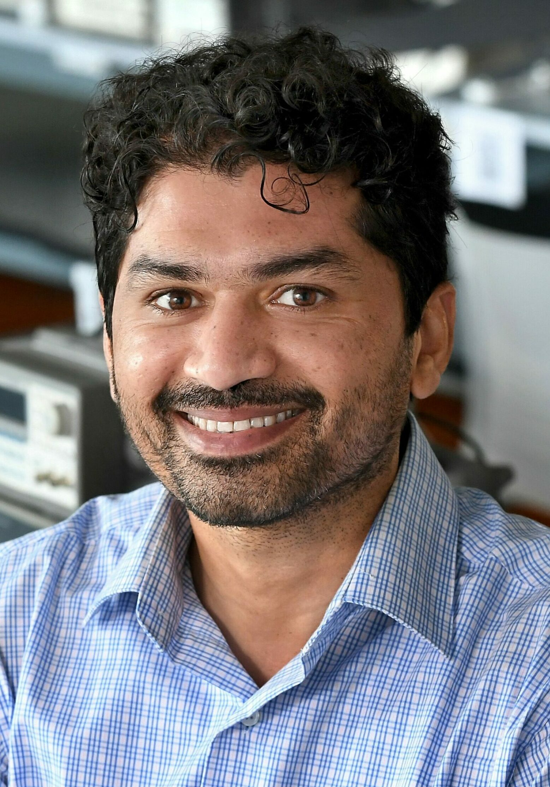
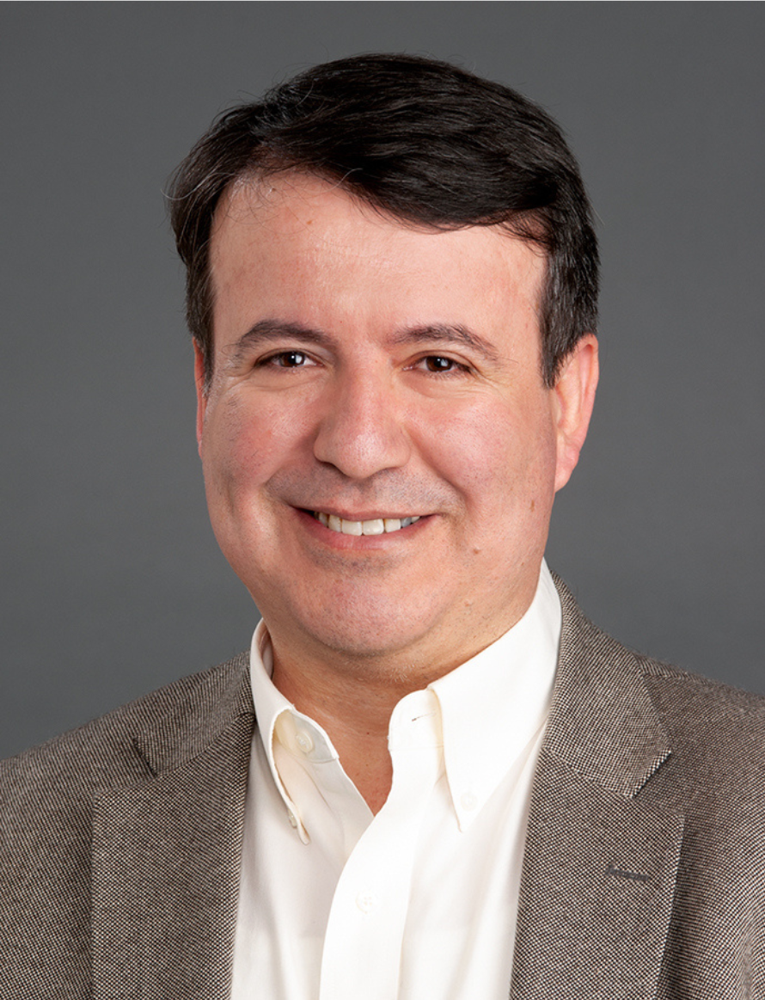

The Challenge
Arriving at the right diagnosis and treatment plan for a cancer patient, particularly in difficult or ambiguous cases, currently depends on a clinical care team's ability to synthesize deeply heterogeneous information: pathology, radiology, genomics, patient history, and more. Achieving accurate diagnoses at even earlier stages of disease, where treatment options produce substantially better long-term outcomes for patients, is even more challenging as it may require even more heterogenous data (e.g., wearable data and other biometrics). These data streams are rarely integrated in any principled way, and the sheer complexity of doing so exceeds human cognitive bandwidth in hard cases. Standard machine learning operates on data that has already been structured and harmonized, which introduces additional challenges.
The Opportunity: Embeddings
The opportunity embeddings offer is to represent a patient as a point, or trajectory, in a high-dimensional space that simultaneously encodes their molecular, imaging, clinical, and reported-outcome data. This multimodal representational capacity is challenging with standard AI approaches because of the complexity in integrating multiple data streams and inputs. The key innovation is in fusion: embedding techniques that can place heterogeneous observations into a shared latent space where their relationships become computationally tractable, enabling the kind of integrated clinical reasoning that is currently beyond reach.
The Approach
Multimodal embedding models capable of jointly representing imaging, genomic, and clinical data have advanced rapidly, but their application to cancer diagnostics remains largely confined to research demonstrations in single institutions on curated datasets. The hard problems – cross-institutional generalizability, extensive multi-modal data integration, clinician interpretability, and prospective clinical validation – have not been seriously attempted at scale. Embeddings represent a credible path to overcoming exactly that barrier; but only if proposals are structured to demonstrate cross-institutional generalizability, not just single-site performance. An innovation lab will develop teams that may conceive of embedding-based approaches that construct a richer, more unified representation of individual patient presentations, with the explicit goal of surfacing actionable guidance for clinicians in cases where current diagnostic approaches fall short. Teams may elect to focus on any aspect of the cancer detection and diagnosis continuum spanning early screening to diagnostic evaluation to treatment selection and survivorship. Teams should also be expected to grapple with the interpretability challenge: embeddings are not inherently understandable to clinicians (or any humans for that matter), and the innovation lab should push participants to propose how embedding-derived outputs would be translated into guidance that a care team can act on. Proposals should include consideration of an appropriate validation framework; a plan for how embedding-derived insights would be tested for clinical truth.
The Innovation Lab
The AI Embeddings Innovation Lab is a collaborative, cross-disciplinary working session designed to generate bold, actionable projects.
Participation is limited to approximately 30 participants.
The Innovation Lab will include:
- Guided discussions
- Structured brainstorming
- Small-group collaboration
- Rapid concept development and refinement
- Input from Subject Guides (experts who help frame, challenge, and strengthen emerging ideas)
Participants will work together to:
- Envision new approaches for applying embedding techniques to complex cancer diagnosis and treatment challenges
- Form interdisciplinary teams around shared research directions
- Develop and refine innovative research proposals
This Innovation Lab is fast-paced, interactive, and future-oriented. It will bring together participants from diverse disciplines to engage in first-principles thinking and collaborative design.
The Lab will be facilitated by Knowinnovation, specialists in accelerating scientific innovation and supporting high-impact research communities. Participants can expect a highly interactive experience, with the majority of time devoted to small-group, solution-focused dialogue and collaborative development.
How We Got Here
This Innovation Lab builds on a structured process designed to turn collective insight into tangible research directions.
The journey began with two Town Halls in April, where a broad community of researchers, clinicians, and technologists surfaced the most pressing questions and opportunities in the field. These insights were then carried into a Convergence Session, where a curated group worked to identify and refine a small set of priority challenges.
Now, the Innovation Lab brings those efforts into focus - creating space for interdisciplinary teams to dive deeply into these challenges and develop innovative, actionable research ideas.
Who Should Apply
We are looking for participants who bring deep expertise in at least one of several key areas:
- Cancer research (especially focused on systems biology cancer research)
- Clinical oncology (especially focused on next generation diagnostics)
- Data science and machine learning
- Privacy and data governance
- Health data infrastructure
We particularly value individuals who have experience working across disciplinary boundaries and are comfortable navigating problems that don't yet have clear solutions. Seniority in a given field is welcome, but just as important is a willingness to engage with unfamiliar perspectives and contribute to early-stage, collaborative thinking.
The ideal cohort will include a mix of specialists, including:
- Cancer data scientists
- AI developers
- Embedding specialists
- Other data scientists
- Clinical oncologists
- Drug developers
- Cancer clinician scientists
- Pharma data scientists and other R&D scientists
- Complex systems modelers
- Cancer biologists
The Subject Guide Team
The Organizers have enlisted the guidance of a diverse subject guide team. They will serve to help guide discussions and work closely with the facilitation team to ensure participants are supported and workshop goals are reached.
Jonas Almeida
NCI Division of Cancer Epidemiology and Genetics
Dr. Jonas Almeida is Director of Data Science for the NCI Division of Cancer Epidemiology and Genetics (DCEG), where he leads efforts to accelerate cancer epidemiology and genetics research through innovative digital methods. His work spans systems biology, computational statistics, and software engineering, with a focus on cloud computing, machine learning, and portable software solutions that bridge consumer genomics, digital pathology, and wearable sensing — translating complex data into precision prevention and medicine tools for patients and caregivers alike.
He holds a Ph.D. in Biological Engineering from the University Nova of Lisbon and has held tenured faculty positions at institutions including MD Anderson Cancer Center — where he received the Abell-Hanger Distinguished Professorship — the University of Alabama at Birmingham, and Stony Brook University before joining DCEG in 2019. He received the DCEG Outstanding Mentor Award in 2021.

Lawrence Hunter
University of Chicago School of Medicine
Dr. Lawrence Hunter is a professor at the University of Chicago School of Medicine. He is widely recognized as one of the founders of bioinformatics; he published some of the first papers in biomedical NLP and in machine learning predictions of molecular function; he served as the first President of the International Society for Computational Biology (ISCB); and he created several of the most important conferences in the field, including ISMB, PSB and the Rocky Mountain Conference on Bioinformatics. Dr. Hunter's research interests span a wide range of areas, from cognitive science to rational drug design. He has published more than 200 scientific papers, holds two patents and has been elected a fellow of both the ISCB and the American College of Medical Informatics.

Anant Madabhushi
Emory University
Dr. Anant Madabhushi is the Robert W. Woodruff Professor of Biomedical Engineering at Emory University, with faculty appointments across Pathology, Biomedical Informatics, Radiology, and other departments. A researcher in Emory's Winship Cancer Center and Research Career Scientist at the Atlanta VA Medical Center, he has authored over 600 peer-reviewed publications and holds more than 235 patents in AI, radiomics, and medical image analysis. He is a Fellow of AIMBE, IEEE, AAAS, and the National Academy of Inventors, and has been recognized by Nature as one of five scientists developing innovative approaches to cancer research. He is also founder of three companies, including Elucid Bioimaging, which received FDA approval for an AI-based cardiovascular diagnostic tool.

Ghulam Rasool
Moffitt Cancer Center
Dr. Ghulam Rasool is a researcher at Moffitt Cancer Center, where his lab develops deep and machine learning models for integrating multimodal, heterogeneous data to support personalized cancer care. His work emphasizes building AI systems that are robust, trustworthy, and clinically interpretable — with active projects spanning multimodal embeddings, digital pathology, radiology, and cancer cachexia detection. He holds a Ph.D. in Systems Engineering from the University of Arkansas at Little Rock and is Principal Investigator on multiple NIH- and NSF-funded grants, including work on federated learning, foundation models in oncology, and AI-driven early cancer detection.

Umit Topaloglu
National Cancer Institute, CBIIT
Dr. Umit Topaloglu is Branch Chief of the Clinical & Translational Research Informatics Branch within NCI's Center for Biomedical Informatics & Information Technology (CBIIT). He leads NCI's clinical research informatics strategy across precision medicine, clinical trials reporting, and enterprise modernization, directing a portfolio of AI initiatives that apply large language models and knowledge graphs to convert protocols into structured, standards-aligned artifacts and streamline study workflows. He also advances privacy-preserving multi-site analytics, including federated learning approaches, and oversees NCI's Semantic Infrastructure — the Enterprise Vocabulary Services and caDSR — which underpins interoperability and real-world evidence across cancer research. He holds a Ph.D. in Applied Science from the University of Arkansas at Little Rock and M.S./B.S. degrees in Electrical Engineering from Cukurova University in Turkey. Before joining NCI, he held several leadership roles at Wake Forest University School of Medicine, including Associate Director of Informatics at the Wake Forest Baptist Comprehensive Cancer Center and